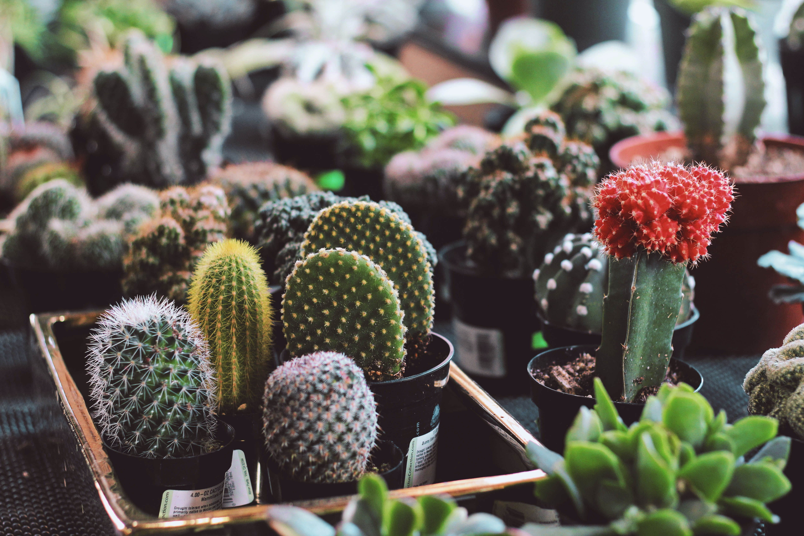

Fique a vontade em nossa página, aprecie os nossos produtos e dicas, sinta-se em casa, vamos conversar sobre cactos e suculentas?
Seja bem-vindo!
A nossa empresa está chegando no mercado para não te vender apenas cactaceas, mas sim, para te vender um momento, uma história e um sentimento.
E antes de tudo, gostaria de te receber de braços abertos por aqui! Sou mais uma amante por esse universo e estou tornando o que era apenas um hobby
em uma profissão.
Quero te atender e entregar os melhores produtos, o nosso diferencial é a qualidade e o amor que tem em cada detalhe. Irei preparar com carinho o seu
pedido e atender suas dúvidas, desde o seu cacto decorativo até o seu mini jardim, estamos prontos para atender todas as suas reuniões e celebrações.
A Hello Art e Garden está feliz em te ver por aqui e eu estou ansiosa para te atender com o que há de melhor no ramo de decorações com cactaceas e bromélias.
Nosso atelier é a aproximação dos nossos clientes ao universo verde dessas plantinhas, que faz brotar alegria e encantamento nos nossos jardins e nossos
corações.
Os formatos variados dos nossos serviços espalham cactos e suculentas para aqueles que já colecionam ou aqueles que estão iniciando um relacionamento com
elas🌵.
Nossas lembrancinhas para eventos, irão fazer você impressionar os seus convidados com bom gosto e elegância.
Os nossos mini jardins, são o mais belo encanto para dar vida a sua decoração, desde a sua casa até mesmo o seu Office.
.
Entre em contato conosco, atendemos encomendas e produtos a pronta entrega para todo o Agreste de Pernambuco.

As suculentas são plantas que em geral conseguem sobreviver à falta de água e luz, e são capazes de armazenar
água nas raízes, caules, troncos ou folha, característica esta que as protege das altas temperaturas e do clima
seco das regiões da África e da América, onde surgiram.
Os cactos são uma das espécies preferidas de quem gosta de cultivar versões miniatura para decorar ambientes.
Não possuem folhas, e somente algumas dão flores quando adultos, geralmente uma vez por ano, na mesma época. A planta possui uma
estrutura que permanece fechada sob sol forte, e sua pele é bem espessa e revestida, tudo para perder o mínimo de líquido possível.
A grande maioria tem espinhos, alguns agudos e longos, outros são também cobertos de pelos. Os espinhos dos cactos servem de proteção
contra animais, promovem sombra do sol intenso e impedem a circulação de ar pela epiderme da planta evitando a perda de água.
1) Seu vaso é mais importante do que você imagina🌵⚠️
Muita água e muito sol podem atrapalhar o crescimento das suculentas.
Potes de plástico não são os mais recomendados e um bom sistema de drenagem é necessário, mesmo em se tratando de plantas que
precisam de menos água que outras. Também tome cuidado para não subestimar o tamanho do vaso, uma vez que raízes saudáveis precisam
de espaço para crescer bem.
Gostou dessa curiosidade? Compartilhe com os seus amigos e não esquece de curtir e comentar😍
Até a próxima!!
2) Embora nem todas as suculentas sejam venenosas, é uma boa ideia conhecer os poucos que são e que tipo de ameaça podem representar para os seres humanos e animais. Se você tem cães ou gatos, ou qualquer outro animal que passeia pela sua casa, ou perto de seu jardim suculento, é uma ótima ideia procurar o tipo de suculentas que você possui e ver qual ameaça em potencial eles representam para seus animais. Enquanto muitos animais são espertos o suficiente para evitar plantas que podem deixá-los doentes, nem todos o farão.
3) Eles são uma boa fonte de proteínas e podem ser usados em várias receitas. No Brasil, já existem vários produtos feitos a partir da planta, como geleias, doces e até cerveja. Mas cuidado, é preciso estar atento e ter o devido conhecimento, pois algumas espécies podem ser venenosas.
4) Os cactos são suculentas, pois têm 92% do seu interior constituído por água, o que diferencia são as folhas, que para os cactos são os espinhos.